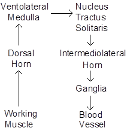
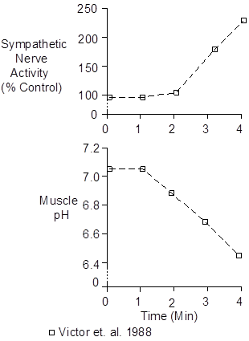
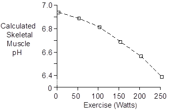

Exercise > Skeletal Muscle Afferent Nerves
The body’s response to exercise involves a combination of central nervous system control and neural and humoral feedback from the working muscle to the brain. This page describes the neural feedback.
Afferent nerves from skeletal muscle are stimulated by contraction, leading to increased ventilation and increased efferent sympathetic nerve activity. This reflex arc is called the muscle chemoreflex or metaboreflex.

The primary stimulus for this reflex is skeletal muscle intracellular or interstitial pH (Victor et. al. 1988, Sinoway et. al. 1989), as shown below.

The reflex is attenuated or eliminated by epidural block.
 Skeletal Muscle pH
Skeletal Muscle pH
The skeletal muscle intracellular pH is lowered by both increased pCO2 and increased lactic acid, with each contributing about ½ to the acidity.
Hermanson and Osnes (1972) observed the following pH values before and after maximal exercise.
| Control | Exercise | |
| Blood | 7.42 | 7.11 |
| Skeletal Muscle | 6.93 | 6.40 |
I’ve used the methods of Stewart (see Acid-Base Balance), the lactate data of Hermansen and Stensvold (1972), and the pCO2 data of Sun et. al. (2001) to estimate pH at intermediate work loads. The assumed pK was 6.94 and assumed strong ion difference was 45 mEq/L.

McArdle’s Disease
Patents with McArdle’s disease (McArdle 1951) have no muscle phosphorylase “b” and cannot metabolize glycogen during exercise. They produce little lactic acid during exercise and intracellular acidosis does not develop. Muscle high-energy phosphate stores are depleted during exercise, as expected.
McArdle’s patients show strong evidence of central command during exercise in the form of increased ventilation, heart rate and cardiac output (Porte et. al. 1966, Lewis et. al. 1984). They show no signs of the muscle chemoreflex (Pryor et. al. 1990).
Curarized Subjects
Observations made in curarized subjects (Galbo et. al. 1987) indicate the following contributions of central command and muscle chemoreflex at maximum exertion.
| Central | Reflex | |
| Ventilation | 48% | 52% |
| Heart Rate | 61% | 39% |
| Blood Pressure | 62% | 38% |
| [Norepinephrine] | 59% | 41% |
| [Epinephrine] | 46% | 54% |
References
Galbo, H., M. Kjær and N.H. Secher. Cardiovascular, ventilatory and catecholamine responses to maximal dynamic exercise in partially curarized man. J. Physiol. 389:557-568, 1987.
Hermansen, L. and J.-B. Osnes. Blood and muscle pH after maximal exercise in man. J. Appl. Physiol. 32:304-308, 1972.
Hermansen, L. and I. Stensvold. Production and removal of lactate during exercise in man. Acta Physiol. Scand. 86:191-201, 1972.
Lewis, S.F., R.G. Haller, J.D. Cook and C.G. Blomqvist. Metabolic control of cardiac output response to exercise in McArdle’s disease. J. Appl. Physiol. 57:1749-1753, 1984.
McArdle, B. Myopathy due to a defect in muscle glycogen breakdown. Clin. Sci. 10:13-33, 1951.
Porte, D., Jr., D.W. Crawford, D.B. Jennings, C. Aber and M.B. McIlroy. Cardiovascular and metabolic responses to exercise in a patient with McArdle’s syndrome. New Eng. J. Med. 275:406-412, 1966.
Pryor, S.L., S.F. Lewis, R.G. Haller, L.A. Bertocci and R.G. Victor. Impairment of sympathetic activation during static exercise in patients with muscle phosphorylase deficiency (McArdle’s disease). J. Clin. Invest. 85:1444-1449, 1990.
Sinoway, L. S. Prophet, I. Gorman, T.J. Mosher, J. Shenberger, M. Dolecki, R. Briggs and R. Zelis. Muscle acidosis during exercise is associated with calf vasoconstriction. J. Appl. Physiol. 66:429-436, 1989.
Sun, X.-G., J.E. Hansen, W.W. Stringer, H. Ting and K. Wasserman. Carbon dioxide pressure-concentration relationship in arterial and mixed venous blood during exercise. J. Appl. Physiol. 90:1798-1810, 2001.
Victor, R.G., L.A. Bertocci, S.L. Pryor and R.L. Nunnally. Sympathetic nerve discharge is coupled to muscle cell pH during exercise in humans. J. Clin. Invest. 82:1301-1305, 1988.